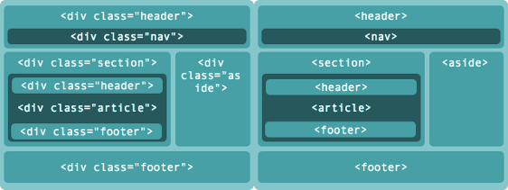

Prazer, HTML
Por Diego Ramos
Essa palestra foi feita pensando numa abordagem prática .
O objetivo é mostrar assuntos de maneira introdutória e direcionar pontos para aprofundamento .
O que iremos ver ?
- O que é, o que come, onde vive ?
- Metadados
- Microdados
- Semântica e sua importância
- Algumas tags
O que é, o que come, onde vive ?
Camadas client-side
- A informação, que é o HTML que vai exibi-la na página.
- CSS, que vai formatar esse HTML de forma que fique legível, usável, bonito.
- Definição de comportamento desses elementos, que é o Javascript e Ajax.
Deles o HTML é mais importante. É o HTML que cuida da exibição da formatação.
É ele que serve os buscadores e leitores de tela.
É ele que serve a informação para aplicações e te dão toda a informação que você busca na web todos os dias.
Metadados
Os Metadados são um conjunto de informações a respeito da página e do conteúdo nela publicado.
Essas informações são usadas pelos navegadores e user-agents em geral, normalmente sendo invisíveis para os usuários.
Entendo a estrutura e semântica do HTML5
Microdados
Microdados
A especificação de Microdados do HTML define um mecanismo que permite que máquinas – leia-se meios de acesso como scripts, aparelhos, sistemas, serviços etc – reconheçam dados que possam ser embedados em documentos HTML de uma forma fácil.
Esses dados devem ser legíveis para seres humanos e para máquinas, sendo também compatíveis com outros formatos de dados existentes como RDF ou JSON.
Microdados
Os Microdados são atributos colocados nas tags do HTML com informações para complementar seu significado. O Google dá um exemplo muito interessante. Veja abaixo um texto sobre uma determinada pessoa:
Meu nome é Bob Smith, mas todos me chamam de Smithy. Esta é a minha página inicial:
www.example.com
Moro em Albuquerque, Novo México, e trabalho como engenheiro na ACME Corp.
Microdados
Agora esse mesmo código recheado de Microdados:
Meu nome é Bob Smith
mas todos me chamam de Smithy.
Esta é a minha página inicial:
www.example.com
Moro em Albuquerque, Novo México, e trabalho como engenheiro
na ACME Corp.
Semântica e sua importância
Em todas as páginas da Web existem divisões básicas referentes aos tipos de conteúdo que são colocados em cada parte do layout, como cabeçalho, rodapé ou menu de navegação.

Semântica e sua importância
Nas versões anteriores do HTML não haviam tags com uma semântica apropriada para cada uma dessas divisões.
Dessa forma, os desenvolvedores acabavam usando a tag
Semântica e sua importância
No HTML5 foram criadas diversas tags semânticas para indicar aos user-agents quais conteúdos estão sendo inseridos em cada uma das divisão da página, organizando e padronizando o desenvolvimento.
